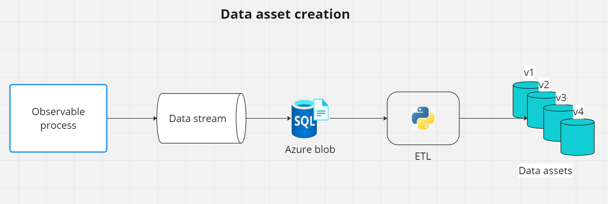

Data asset#
A data asset in Azure Machine Learning refers to a reusable piece of data that can be used across various parts of the Azure Machine Learning service. It essentially represents a dataset that has been registered in an Azure Machine Learning workspace. These data assets can include things like training data, test data, data used for feature extraction, etc.
Some key features about a data asset:
Reusable: Once registered, these datasets can be used in multiple experiments, pipelines, or training processes without the need to reload or redefine them each time.
Version Control: Azure ML allows you to version your data assets. This means you can keep track of changes over time, experiment with different versions of the same dataset, and ensure reproducibility in your machine learning workflows.
Scalability: Data assets in Azure ML are designed to handle large-scale datasets efficiently, leveraging Azure’s cloud infrastructure.
Integration: These data assets can be easily integrated with Azure ML components and pipelines.
Security and Governance: Azure ML provides features to secure your data assets, including encryption, role-based access control, and monitoring.
By using data assets, one can streamline their workflows in Azure ML, ensuring efficient, reproducible, and scalable machine learning processes.
Creating a data asset in Azure ML#
Usually, data assets originate from azure blob storage. Thus, a typical workflow is the following:

First, an observable phenomena’s data gets stored in azure blob storage. Then, the data is registered as a data asset in Azure ML. Each new data in a data asset has a unique version.
Now any further component/pipeline can use a specific data asset version as input.
Creating a data asset using Python#
# Azure ml datasets
from azure.ai.ml import MLClient
from azure.ai.ml.entities import Data, AzureBlobDatastore, AccountKeyConfiguration
from azure.ai.ml.constants import AssetTypes
# Exceptions
from azure.core.exceptions import ResourceNotFoundError
def create_dataset_from_storage(
ml_client: MLClient,
datastore_name: str,
container_name: str,
account_key: str,
storage_account_name: str,
dataset_name: str,
folder_name: str
) -> None:
"""
Description
-----------
A function to create a data asset from Azure Blob Storage to Azure ML workspace
Args
----
:param ml_client: MLClient object
:param datastore_name: Azure ML Datastore name
:param container_name: Azure Blob Storage container name
:param account_key: Azure Blob Storage account_key (primary/secondary storage key)
:param storage_account_name: Azure Storage Account name
:param dataset_name: Azure ML Dataset name; This will the name for the data asset
"""
# Checking if datastore exists
try:
datastore = ml_client.datastores.get(datastore_name)
print(f"Azure ML Datastore {datastore_name} already exists")
except ResourceNotFoundError:
datastore = None
print(f"Creating new Azure ML Datastore: {datastore_name}")
# If not create datastores
if not datastore:
datastore = AzureBlobDatastore(
name=datastore_name,
description="Datastore pointing to a blob container using https protocol.",
account_name=storage_account_name,
container_name=container_name,
protocol="https",
credentials=AccountKeyConfiguration(account_key=account_key),
)
ml_client.create_or_update(datastore)
print(f"Azure ML Datastore {datastore_name} created")
# Define path to datastore
path = f"azureml://datastores/{datastore.name}/paths/{folder_name}"
# Define the dataset object
waste_types_data = Data(
path=path,
type=AssetTypes.URI_FOLDER,
description="testing azure.ai.ml",
name=dataset_name,
)
print("Creating Azure ML dataset")
# Create the dataset in the workspace
data_info = ml_client.data.create_or_update(waste_types_data)
print(
f"Azure ML dataset {dataset_name} created. Dataset version is {data_info.version}"
)
Now imagine we have data called “data.parquet” in the azure blob storage container “electricity” in the folder “2024-01-25”. We can create a data asset from this data using the following code:
ml_client = MLClient()
create_dataset_from_storage(
ml_client=ml_client,
datastore_name="electricity",
container_name="data.parquet",
account_key="account_key",
storage_account_name="storage_account_name",
dataset_name="data.parquet",
folder_name="2024-01-25",
)